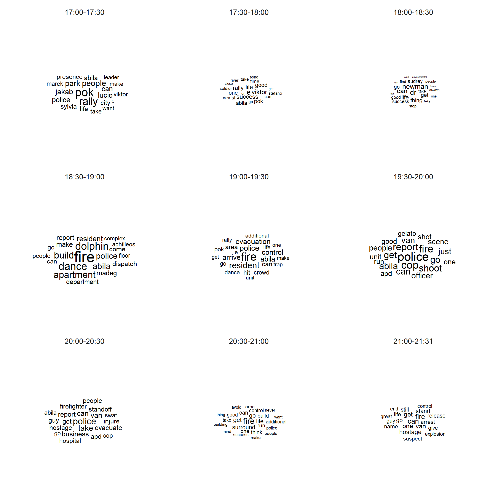
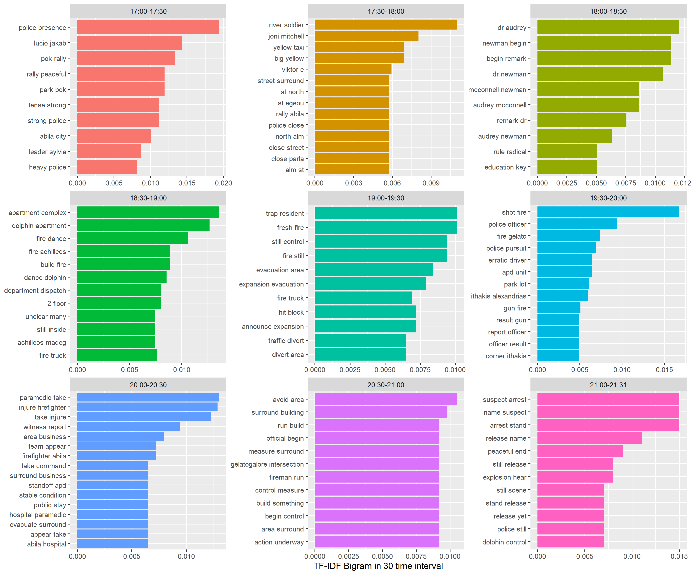
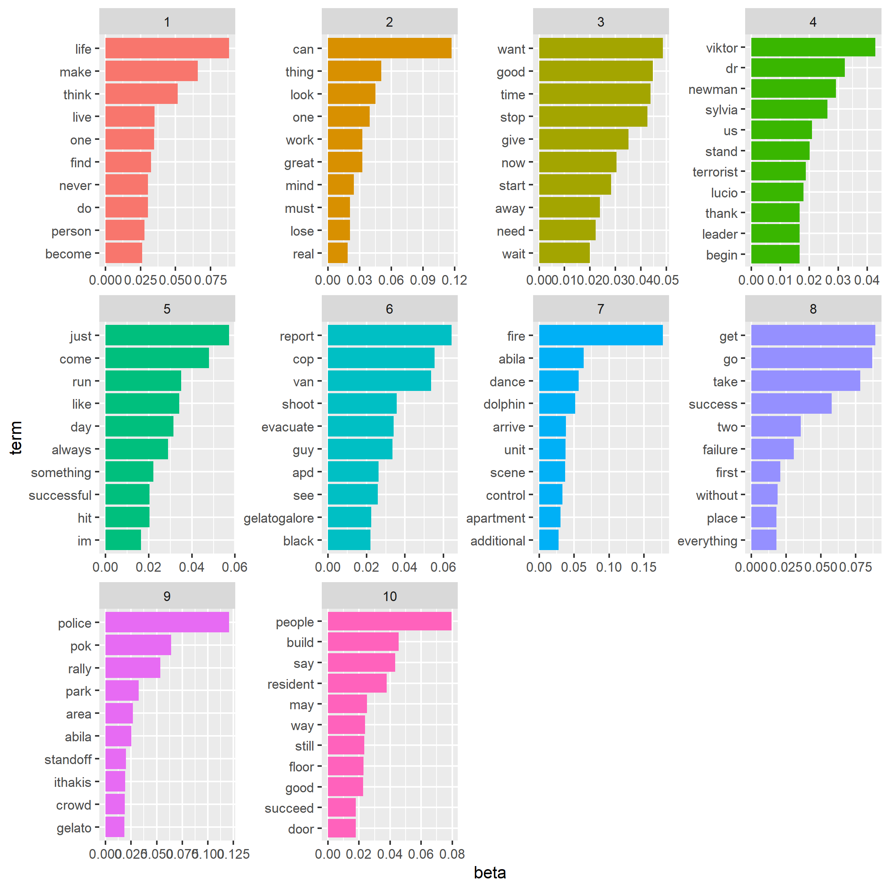
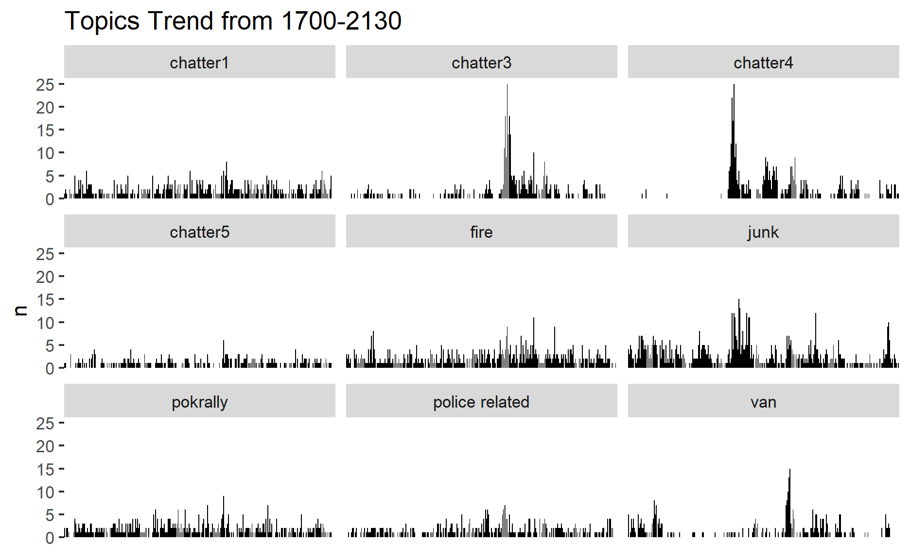
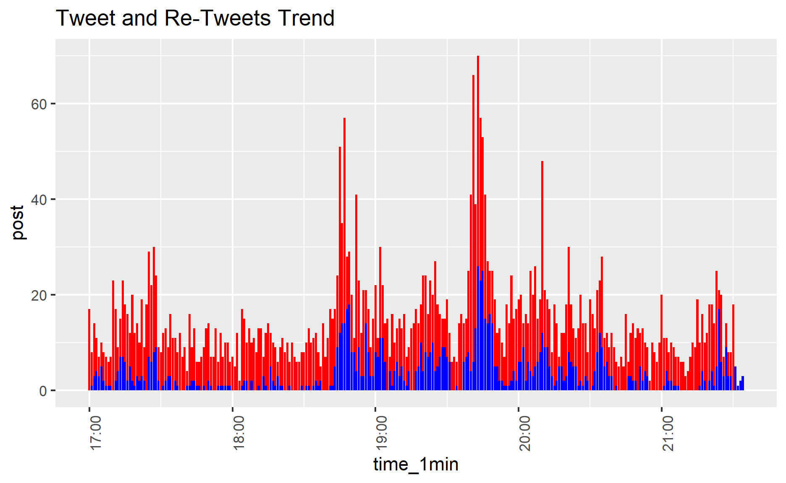
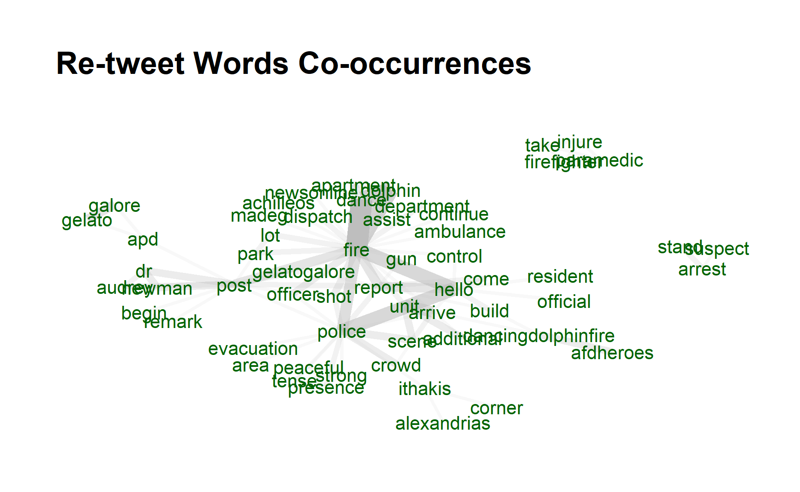
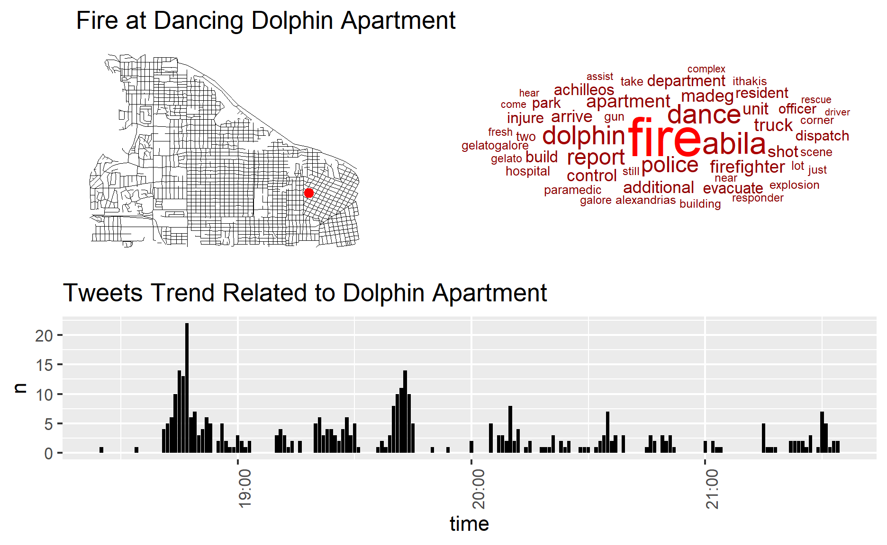
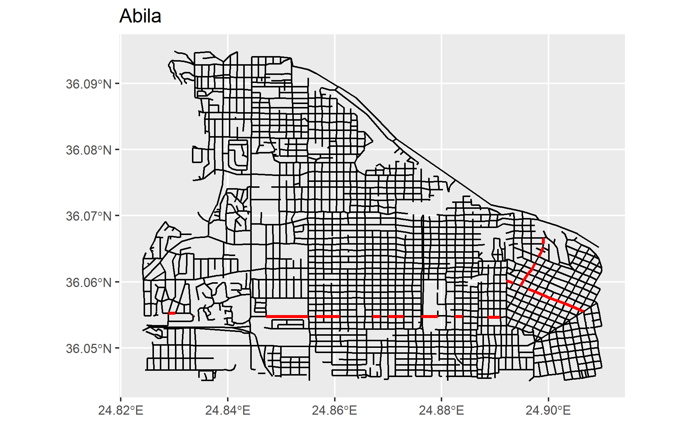
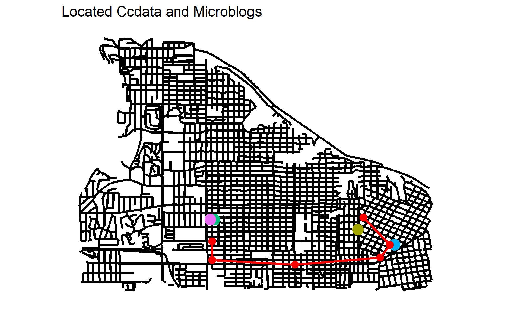

Use visual analytics to analyze the available data and evaluate the changing levels of risk to the public and recommend actions.
4.1 Using visual analytics, characterize the different types of content in the dataset. What distinguishes meaningful event reports from typical chatter from junk or spam? Please limit your answer to 8 images and 500 words.
Split data by 30 minutes time interval and perform worldcloud, to visualize the most frequent words in the microblog.
#split data into 30 minutes time interval
data$timestamp <- ymd_hms(data$`date(yyyyMMddHHmmss)`)
data$time_30min = cut(data$timestamp, breaks="30 min")
data$id <- seq.int(nrow(data))
data_subset=subset(data,select=c("time_30min","cleaned"))
data$timestamp <- ymd_hms(data$`date(yyyyMMddHHmmss)`)
data$time_30min = cut(data$timestamp, breaks="30 min")
data$id <- seq.int(nrow(data))
data_subset=subset(data,select=c("time_30min","cleaned"))
usenet_words<-data_subset%>%
group_by(time_30min) %>%
unnest_tokens(word, cleaned) %>%
count(time_30min,word, sort = TRUE)
usenet_words[order(usenet_words$time_30min),]
# A tibble: 6,975 x 3
# Groups: time_30min [10]
time_30min word n
<fct> <chr> <int>
1 2014-01-23 17:00:00 pok 98
2 2014-01-23 17:00:00 rally 76
3 2014-01-23 17:00:00 people 44
4 2014-01-23 17:00:00 park 40
5 2014-01-23 17:00:00 jakab 37
6 2014-01-23 17:00:00 lucio 35
7 2014-01-23 17:00:00 police 35
8 2014-01-23 17:00:00 can 34
9 2014-01-23 17:00:00 abila 30
10 2014-01-23 17:00:00 sylvia 30
# ... with 6,965 more rowsusenet_words$time_30min<-usenet_words$time_30min %>% str_replace_all("2014-01-23 ","")
l1<-c("18:30:00","19:30:00","17:00:00","19:00:00","20:00:00","20:30:00","18:00:00","17:30:00","21:00:00","21:30:00")
Time_30min<-c("18:30-19:00","19:30-20:00","17:00-17:30","19:00-19:30","20:00-20:30","20:30-21:00","18:00-18:30","17:30-18:00","21:00-21:31","21:00-21:31")
time_30min_df<-data.frame(l1,Time_30min)
usenet_words<-left_join(usenet_words,time_30min_df,by=c("time_30min"="l1"))
set.seed(1234)
usenet_words %>%
group_by(Time_30min) %>%
slice_max(order_by = n, n = 20) %>%
ggplot(aes(label = word,
size = n)) +
geom_text_wordcloud() +
theme_minimal() +
facet_wrap(~Time_30min)

From the visualization, we can tell the main content discussing in the community are
1700-1830 pok rally in park with several name mentioned such as cylvia, jakab, viktor;
1830-1930 fire at dancing dolphin partment, police and evacuation;
1930-2000 shooting and cops/police;
2100-2131 van/ hostage/ explosion;
Then, by applying Term Frequency – Inverse document frequency (tf-idf) to bigram texts, we can uncover more information compared with uni-grams.
data_subset$time_30min<-str_replace_all(data_subset$time_30min,"2014-01-23 21:30:00","2014-01-23 21:00:00")
bigrams <- data_subset%>%
group_by(time_30min)%>%
unnest_tokens(word,
cleaned,
token = "ngrams",
n = 2) %>%
count(time_30min,word, sort = TRUE) %>% ungroup()
tf_idf <- bigrams%>%
bind_tf_idf(word,time_30min, n) %>%
arrange(desc(tf_idf))
tf_idf$time_30min<-str_replace_all(tf_idf $time_30min,"2014-01-23 ","")
l1<-c("18:30:00","19:30:00","17:00:00","19:00:00","20:00:00","20:30:00","18:00:00","17:30:00","21:00:00","21:30:00")
Time_30min<-c("18:30-19:00","19:30-20:00","17:00-17:30","19:00-19:30","20:00-20:30","20:30-21:00","18:00-18:30","17:30-18:00","21:00-21:31","21:00-21:31")
time_30min_df<-data.frame(l1,Time_30min)
tf_idf<-left_join(tf_idf,time_30min_df,by=c("time_30min"="l1"))
tf_idf %>%
group_by(Time_30min) %>%
slice_max(tf_idf,
n = 10) %>%
ungroup() %>%
mutate(word = reorder(word,
tf_idf)) %>%
ggplot(aes(tf_idf,
word,
fill = Time_30min)) +
geom_col(show.legend = FALSE) +
facet_wrap(~ Time_30min,
scales = "free") +
labs(x = "TF-IDF Bigram in 30 time interval",
y = NULL)

Without having to process more on data, the contents of the microblogs with 30 mins time interval is even more informative.
For instance, from 1700-1800, we know that police presense at pok rally and Dr. Audrey is mentioned several times from 1800. Then from 1830 , fire occurs at dolphin apartment and followed by evacuation. Subsequently, from 1930, a shot/gun fire happened with police involved, followed by injured firefighter and hospitalization. And at 2100 suspects were arrested and followed by an explosion at dolphin apartment from 2130 onward.
To distinguish meaningful events from chatter/junk/spam messages, I will then perform topic modeling to identify topic in each microblogs.
Top five words in each topics
wordcorpus <- Corpus(VectorSource(as.character(data$cleaned)))
dtm <- DocumentTermMatrix(wordcorpus,
control = list(
wordLengths=c(2, Inf), # limit word length
bounds = list(global = c(5,Inf)), # minimum word frequency
removeNumbers = TRUE, #remove Numbers
weighting = weightTf, #weighted term frequency
encoding = "UTF-8"))
rowTotals <- apply(dtm , 1, sum) #Find the sum of words in each Document
dtm.new <- dtm[rowTotals> 0, ] #remove 0 dtm rows of matrix
topic=LDA(dtm.new,k=10,method="Gibbs",conrol=list(seed=2021,alpha=0.01,iter=300))
terms(topic,5)
Topic 1 Topic 2 Topic 3 Topic 4 Topic 5 Topic 6 Topic 7
[1,] "life" "can" "want" "viktor" "just" "report" "fire"
[2,] "make" "thing" "good" "dr" "come" "cop" "abila"
[3,] "think" "look" "time" "newman" "run" "van" "dance"
[4,] "live" "one" "stop" "sylvia" "like" "shoot" "dolphin"
[5,] "one" "great" "give" "us" "day" "evacuate" "arrive"
Topic 8 Topic 9 Topic 10
[1,] "get" "police" "people"
[2,] "go" "pok" "build"
[3,] "take" "rally" "say"
[4,] "success" "park" "resident"
[5,] "two" "area" "may" Extract per-topic-per-word probabilities ,β(“beta”), from the model. The higher the value, the more important of the words’ contribution to the topic.
ap_topics <- tidy(topic, matrix = "beta")
ap_top_terms <- ap_topics %>%
group_by(topic) %>%
slice_max(beta, n = 10) %>%
ungroup() %>%
arrange(topic, -beta)
ap_top_terms %>%
mutate(term = reorder_within(term, beta, topic)) %>%
ggplot(aes(beta, term, fill = factor(topic))) +
geom_col(show.legend = FALSE) +
facet_wrap(~ topic, scales = "free") +
scale_y_reordered()

As shown above, the meaningful keywords can be found in each topic. From the distribution, we can see that in abnormal topic such as topic 1,5 and 9, the top words are dominating the topic, while in other chatter/junk/spam topics, a few normal words has relatively same high beta value. As such, topics can be identified roughly as below.
Topic 1 - fire at dancing dolphin
Topic 3 - pok rally
Topic 5- police related with evacuation/hostage/standoff
Topic 9 - van/guy
While other topics are more chatter/junk related.
By using gamma value from topic modeling results, we can then assign each document with a topic.
topic_gamma <- tidy(topic, matrix = "gamma")
topic_gamma <- topic_gamma %>%
group_by(document) %>%
slice(which.max(gamma))
topic_gamma$document<-as.numeric(topic_gamma$document)
#topic_gamma[order(topic_gamma$document),] %>% group_by(topic) %>% count()
#(topic_gamma%>% arrange(desc(-document)))
id_time <- data %>% select(c("id","time_1min"))
topic_data<-left_join(topic_gamma,id_time,by=c("document"="id"))
#manually put topics in LDA results
topic_c<- c(1,2,3,4,5,6,7,8,9,10)
topics_c <- c("fire","chatter1","pokrally","junk","police related",
"chatter3","chatter4","chatter5","van","junk")
topic_df<-data.frame(topic_c,topics_c )
topic_data<-left_join(topic_data,topic_df,by=c("topic"="topic_c"))
topic_data %>% group_by(time_1min,topics_c) %>% count() %>%
ggplot(aes(x=time_1min))+
geom_bar(aes(y=n), stat = "identity",fill = "black")+
facet_wrap(~topics_c)+
theme(axis.title.x=element_blank(),
axis.text.x=element_blank(),
axis.ticks.x=element_blank())+
ggtitle("Topics Trend from 1700-2130")

From the topic trend distribution, we can see that chatter topic 1-5 are spreaded all over the time period, and the number of junk posts are small and evenly distributed. While the peaks of key major events are very obvious at certain point of time.
In summary of topic modeling techniques and visualization, we can identify major event from junk/chatter/spam, and the topic trend visualization can help the audience know about temporal pattern of meanningful events distribution.
#Tokenize data
# tidytxtdata<- tidy(dtm)
#
# tidytxtdata <- tidytxtdata%>% #Remove the count column
# select(-count)
# tidytxtdata <- tidytxtdata%>% #Change the column name 'term' to 'word' so that we can get rid of stopwords later
# rename(word = term)
#
#
# #Remove stopwords
# tidytxtdata <- tidytxtdata%>%
# anti_join(stop_words)
#
#
# #Use the btm model
# set.seed(321)
# model <- BTM(tidytxtdata, k = 20, beta = 0.01, background = TRUE, iter = 500, trace = 100) #Run the model
#
# topicterms <- terms(model, top_n = 10) #View the topics
# #topicterms
#
# library(textplot)
# library(ggraph)
# library(concaveman)
# plot(model)
Then, let’s take a closer look of the relationship of number of tweets and re-tweets from a single author.
tweet<-data %>%
filter(author!="NA") %>%
group_by(author) %>%
count() %>%
ungroup()
retweet<-data %>%
group_by(RT_from) %>%
count()%>%
ungroup()
colnames(tweet)[2]<-"tweet"
colnames(retweet)[2]<-"retweet"
tweet_retweet<-left_join(tweet, retweet, by = c("author"="RT_from"))
is.na(tweet_retweet$retweet)<-0
tweet_retweet$retweet_ratio<- tweet_retweet$retweet/tweet_retweet$tweet
tweet_retweet$tweet_scale <-scale(tweet_retweet$tweet)
tweet_retweet$tweet_scale <-as.numeric(tweet_retweet$tweet_scale)
tweet_retwee<-tweet_retweet %>% rename(id=author)
plot_ly(data=tweet_retweet,
x=~retweet_ratio,
y=~tweet_scale,
text= ~paste("Author:",author,
"Tweet:",tweet,
"Re-Tweet",retweet))%>% layout(autosize = F,title="Authors' Tweet and Reweet Status")
dt<-subset(data,select=c(timestamp,author,message))
dt$timestamp<-str_replace_all(dt$timestamp,"2014-01-23 ","")
dt$message<-iconv(dt$message, 'utf-8', 'ascii', sub='')
tweet_retweet_2<-subset(tweet_retweet,select=c(author,tweet,retweet))
dt<-left_join(dt,tweet_retweet_2,by=c("author"="author"))
dt<-dt %>% filter(author!="")
# dt<-dt%>% mutate_if(is.character, ~gsub('[^ -~]', '', .)) # remove characters non UTF-8
DT::datatable(dt)
From the chart above, we can notice that user with number of tweets does not have any retweets, such as @Clevvah4Evah, @KronosQuoth are mainly posting junk/spam blogs. On the other hand, authors with high re-tweet frequency are HomelandIlluminations, @AbilaPost, @KronosStar, @CentralBulletin , @NewsOnlineToday , and @InternationalNews, of which the post were more active and meaningful information to the public.
Network Visualization in detecting chatter/spam/junk
RT_edges_aggregated <-data_RT%>%
group_by(RT_from,author) %>%
count() %>%
ungroup()
RT_nodes_aggregated <-data%>%
group_by(author) %>%
count() %>%
ungroup
RT_nodes_aggregated$id<-seq.int(nrow(RT_nodes_aggregated))
RT_nodes_aggregated<-RT_nodes_aggregated %>%
rename(label=author,size=n) %>%
filter(label!="")
RT_edges_aggregated_viz<-
left_join(RT_edges_aggregated,RT_nodes_aggregated,by=c("RT_from"="label")) %>%
rename(from=id) %>%
left_join(RT_nodes_aggregated,by=c("author"="label")) %>%
rename(to=id)
RT_edges_aggregated_viz<-subset(RT_edges_aggregated_viz,select=c("from","to"))
RT_graph <- tbl_graph(nodes=RT_nodes_aggregated,
edges = RT_edges_aggregated,
directed = TRUE)
# g <- RT_graph %>%
# mutate(betweenness_centrality = centrality_betweenness()) %>%
# ggraph(layout = "nicely") +
# geom_edge_link(color = "lightblue") +
# geom_node_point(aes(color = label,size=n,label=label))+
# theme(legend.position = "none")
#
# g
visNetwork(RT_nodes_aggregated,
RT_edges_aggregated_viz ,
main = "Retweet Network and Retweet Counts")%>%
visOptions(highlightNearest = TRUE)%>%
visNodes(label="label",color = list(background = "lightblue",
border = "darkblue",
highlight = "yellow"))%>%
visIgraphLayout(layout = "layout_with_fr")
Visnetwork packages in R provided interactive capability for network visualization. For the plot above, click the nodes and zoom in the graph, the selected node and its network will be highlighted, which can provided the information of how many people are directly affected by the original author and the size of the dot indicates the total number of posts by users.
This chart can be applied to answer quetions 1 and 2.
From the chart, we can tell thatthe authors in the center like @HomelandIlluminations/@AbilaPost/@KronosStar/@CentralBulletin/@NewsOnlineToday/@InternationalNews have affected the public most directly and widely. And users like @Clevvah4Evah, @KronosQuoth have quite number of junk posting with no re-tweets, while other users with no link post mainly chatter contents.
4.2 Use visual analytics to represent and evaluate how the level of the risk to the public evolves over the course of the evening. Consider the potential consequences of the situation and the number of people who could be affected. Please limit your answer to 10 images and 1000 words.
count <- data %>%
group_by(type,time_1min) %>%
summarise(count_of_posts= n_distinct(message))
count$time_1min=ymd_hms(count$time_1min)
#count$time_1min=format(count$time_1min,format = "%H:%M:%S")
mean=mean(count$count_of_posts)
ggplot(count,aes(x=time_1min,y=count_of_posts,fill=type))+
geom_bar(stat="identity",position="dodge")+
# geom_abline(h=mean, col = "black")+
theme(axis.text.x = element_text(angle = 90, hjust = 1))+
ggtitle("Total Number of Posts through the period")
# A tibble: 10 x 3
# Groups: type [1]
type time_1min count_of_posts
<chr> <dttm> <int>
1 mbdata 2014-01-23 19:43:00 61
2 mbdata 2014-01-23 19:41:00 60
3 mbdata 2014-01-23 19:44:00 48
4 mbdata 2014-01-23 19:45:00 48
5 mbdata 2014-01-23 18:47:00 47
6 mbdata 2014-01-23 18:45:00 44
7 mbdata 2014-01-23 18:52:00 38
8 mbdata 2014-01-23 19:40:00 38
9 mbdata 2014-01-23 20:10:00 38
10 mbdata 2014-01-23 19:46:00 33With time interval at 1 minute, the sum number of posts is plotted in bar chart as above. The peaks of both ccdata and mbdata are observed during time 19:40-19:50, 18:45:00 and 20:10:00.
data_rt2<-data %>%
#filter(str_detect(message, "fire")) %>%
select(c("author","time_1min","message","RT_from")) %>%
group_by(time_1min) %>%
summarise(post=n(),
rt_post=sum(RT_from!=""))
data_rt2$time_1min=ymd_hms(data_rt2$time_1min)
#ggplot(fire,aes(x=time_1min,y=n))+
#geom_bar(stat="identity",position="dodge")+
#theme(axis.text.x = element_text(angle = 90, hjust = 1))+
#ggtitle("Total Number of Posts through the period")
ggplot(data_rt2,aes(x=time_1min)) +
geom_bar(aes(y=post), stat = "identity",fill = "red") +
geom_bar(aes(y=rt_post), stat = "identity",fill = "blue") +
theme(axis.text.x = element_text(angle = 90, hjust = 1))+
ggtitle("Tweet and Re-Tweets Trend")

Another way to detect the active level of microblog is to visualize the proportion of re-tweet/tweet. As shown in the bar graph above, the peak trend coincides with “Total Number of Posts through the period”, indicating the people are actively eveloved in the events happening in Abila.
The goverment can monitor the ratio of retweet in community to detect abnormal event.
Noticed that the mainstream media (with name starting with capital letter and frequently re-tweet by public) are actively quoted media for Abila.
@HomelandIlluminations/@AbilaPost/@KronosStar/@CentralBulletin/@NewsOnlineToday/@InternationalNews are top6 social media. Their tweet should be closely monitored by local authorities, in particular, when the frequency of re-tweet from the public has raised.
For instance, to understand people’s attention of the abnormal events, we can monitor the words and its relationships in main stream media’s re-tweets.
RT_from n
1: HomelandIlluminations 183
2: AbilaPost 169
3: KronosStar 143
4: CentralBulletin 78
5: NewsOnlineToday 44
6: InternationalNews 43#convert dataframe to corpus
data_RT_main<-data %>%
filter(RT_from==c("HomelandIlluminations","AbilaPost",
"KronosStar","CentralBulletin",
"NewsOnlineToday","InternationalNews"))
data_RT_main$id <- seq.int(nrow(data_RT_main))
data_RT_subset<-data_RT_main %>% select(c("id","RT_message"))
data_RT_subset$RT_message_cleaned<-
tolower(data_RT_subset$RT_message)%>% # transform all message to lower cases
replace_contraction()%>% #replace contractions with long form
replace_word_elongation()%>%
str_replace_all("[0-9]", "") %>% #removing numbers
str_replace_all("([,=!.?$+%-&#@])","")%>% #remove punctuations
str_replace_all("abila|abilapost|centralbulletin|kronosstar|pok|rally","")%>%
removeWords(stopwords("english"))%>%
str_squish()%>%
str_trim %>%
lemmatize_strings()
x<-data_RT_subset %>%
unnest_tokens(word, RT_message_cleaned)
x<-cooccurrence(x, group = "id", term = "word")
plt <- textplot_cooccurrence(x,
title = "Re-tweet Co-occurrences", top_n = 150)
plt

In the re-tweet from the main media, high occurrence of fire at dolphin apartement has the most co-occurrence re-tweets, indicating highest attention and risk in the community, followed by several events involved with police such as post of pokrally/ arrive at scene. While in the edge of the visualization, we can found that the small group of public was interested in re-tweet firefighter injure at hospital/ suspect arrest, which has less risk in the community.
4.3 If you were able to send a team of first responders to any single place, where would it be? Provide your rationale. How might your response be different if you had to respond to the events in real time rather than retrospectively? Please limit your answer to 8 images and 500 words.
To send team of responders and make sure right location and short responding time, we can take a closely look location-tagged posts or posts contents with locations.
On retrospective appraoch, I will send team of first respondents to dolphin dancing apartment.
Reasons as below,
The fire event at dolphin get the most attention and risk from the public according to previous analysis. The word file, dolphin department was frequently mentioned in the microblog by mainstream media and individual users.
Comparing to other event, some are reported by only a few individual users with vague locations mentioned in the latter time, the fire at dolphin apartment has been reported with an accurate location at early time around 18:40.
packages= c('sp','sf','gridExtra','mapview')
for(p in packages){
if(!require(p,character.only= T)){
install.packages(p)
}
library(p, character.only = T)
}
abila<-st_read('data/MC3/Geospatial/Abila.shp',quiet=TRUE)
data_location <- data %>%
filter(longitude!="" ) %>%
add_count(longitude,latitude,author)
dangermice <- data_location %>%
filter(author=="dangermice" ) %>%
select(timestamp,message,longitude,latitude)
p1<-ggplot()+
geom_sf(data=abila,size=1,color="black",fill="cyan1")+
ggtitle("Fire at Dancing Dolphin Apartment")+
coord_sf()+
theme(panel.background = element_rect(fill = "transparent"), # bg of the panel
plot.background = element_rect(fill = "transparent", color = NA), # bg of the plot
panel.grid.major = element_blank(), # get rid of major grid
panel.grid.minor = element_blank(), # get rid of minor grid
legend.background = element_rect(fill = "transparent"), # get rid of legend bg
legend.box.background = element_rect(fill = "transparent"),# get rid of legend panel bg)
axis.text.x = element_blank(),
axis.text.y = element_blank(),
axis.ticks = element_blank(),
axis.title.y=element_blank(),
axis.title.x =element_blank()) +
geom_point(data = dangermice, aes(x = longitude,y=latitude),color="red",size=5)
data_fire <- data %>%
filter(str_detect(message,"fire|explosion|dolpin")) %>%
select(message, timestamp,cleaned) %>%
unnest_tokens(word, cleaned)
data_fire_words <- data_fire %>%
count(word, sort = TRUE) %>%
ungroup() %>%
arrange(desc(n))
p2<- ggplot(head(data_fire_words,50),aes(label = word,
size = n,color=n)) +
geom_text_wordcloud()+
scale_size_area(max_size = 10) +
theme(panel.background = element_rect(fill = "transparent"), # bg of the panel
plot.background = element_rect(fill = "transparent", color = NA))+
scale_color_gradient(low = "darkred", high = "red")
data$time_1min<-str_replace_all(data$time_1min,"2014-01-23 ","")
p3<-data %>%
filter(str_detect(message,"fire|explosion|dolpin")) %>%
group_by(time_1min) %>%
count() %>%
ungroup() %>%
ggplot(aes(x=time_1min))+
geom_bar(aes(y=n), stat = "identity",fill = "black")+
theme(axis.title.y=element_blank(),
axis.ticks.y=element_blank(),
axis.text.y=element_blank(),
axis.title.x=element_blank(),
panel.background = element_rect(fill = "transparent"),
axis.text.x=element_blank(),
axis.ticks.x=element_blank())+
ggtitle("Posts with Dolphin Apartment")
# Move to a new page
grid.newpage()
# Create layout : nrow = 2, ncol = 2
pushViewport(viewport(layout = grid.layout(2, 2)))
# A helper function to define a region on the layout
define_region <- function(row, col){
viewport(layout.pos.row = row, layout.pos.col = col)
}
# Arrange the plots
print(p1, vp=define_region(1, 1))
print(p2, vp = define_region(1, 2))
print(p3, vp = define_region(2, 1:2))

If it’s real time, I will arrange the trajectory of the team according to the status of the event and its location.
#head(abila)
abila<-st_read('data/MC3/Geospatial/Abila.shp',quiet=TRUE)
# abila2<-abila %>%
# filter(FENAME==c('Antoniadou'),FEDIRP=='N')
#
# abila3<-abila %>%
# filter(FENAME==c('Estos'),FEDIRP=='N')
abila4<-abila %>%
filter(FENAME==c('Achilleos','Madeg'),FEDIRP=='N',FETYPE=='St')%>%
mutate(geometry2=st_touches(geometry))
#,TLID==c(184646109,184646149)
abila4<-abila4 %>% mutate(long = unlist(map(geometry,2)),
lat = unlist(map(geometry,3)))
# abila_cc <- abila4 %>%
# summarize(do_union=FALSE) %>%
# st_cast("POINT")
ggplot(data=abila)+
geom_sf()+
ggtitle("Abila")+
#geom_point(data = abila4,mapping = aes(x=long,y=lat),color="red")
# coord_sf()
# geom_line(data=data_location, aes(x=longitude, y=latitude), color="red", size=1)+
# geom_sf(data=abila3,size=1,color="red",fill="cyan1")+
# geom_sf(data=abila2,size=1,color="red",fill="cyan1")+
geom_sf(data=abila4,size=1,color="red",fill="cyan1")

abila<-st_read('data/MC3/Geospatial/Abila.shp',quiet=TRUE)
df_ccdata<-data %>%
filter(type=="ccdata",location!="N/A",str_detect(message,"POLICE|FIRE|CRIME|SUSPICIOUS|VAN"))
df_ccdata<-subset(df_ccdata,select=c("type","message","location","timestamp"))
df_ccdata<-df_ccdata %>%separate(location,c("street1","street2"),sep="(/)",convert=T) %>%
drop_na(street2)
df_ccdata<-df_ccdata %>%
separate(street1,c("street1_D","street1"),sep="\\.",convert=F)
df_ccdata<-df_ccdata %>%
separate(street2,c("street2_D","street2"),sep="\\.",convert=F)
df_ccdata$street1<-ifelse(is.na(df_ccdata$street1),df_ccdata$street1_D,df_ccdata$street1)
df_ccdata$street1_D<-ifelse(df_ccdata$street1==df_ccdata$street1_D,NA,df_ccdata$street1_D)
df_ccdata$street2<-ifelse(is.na(df_ccdata$street2),df_ccdata$street2_D,df_ccdata$street2)
df_ccdata$street2_D<-ifelse(df_ccdata$street2==df_ccdata$street2_D,NA,df_ccdata$street2_D)
df_ccdata$street1 <- str_replace_all(df_ccdata$street1," [St|Ave]","")
df_ccdata$street1 <- str_replace_all(df_ccdata$street1," ","")
df_ccdata$street2 <- str_replace_all(df_ccdata$street2," [St|Ave]","")
df_ccdata$street2 <- str_replace_all(df_ccdata$street2," ","")
#dx[dx$ID %in% dx$ID[duplicated(dx$ID)],]
# abila_tomap<-abila[abila$geometry %in% abila$geometry[duplicated(abila$geometry)],]
abila<-st_read('data/MC3/Geospatial/Abila.shp',quiet=TRUE)
p = npts(abila, by_feature = TRUE)
abila <- cbind(abila, p) %>%
filter(p>1)
abila<-abila %>% mutate(geometry2=st_touches(geometry))
# df_ccdata<-data %>%
# filter(type=="ccdata") %>%
# separate(location,c("number","street"),sep="(?<=[0-9])",convert=T) %>%
# drop_na(street) %>%
# mutate(number= as.integer(number)) %>%
# mutate(number= floor(number/100)*100)
#
#
# abila_2<- abila %>%
# mutate(From=pmin(FRADDL,FRADDR)) %>%
# mutate(From=floor(From/100)*100) %>%
# unite(Part1,FEDIRP:FENAME,sep=". ",remove=F,na.rm=T) %>%
# unite(FullName,c(Part1, FETYPE),sep=" ")
#
# p = npts(abila_2, by_feature = TRUE)
# abila_2 <- cbind(abila, p) %>%
# filter(p>1)%>%
# mutate(geometry=st_centroid(geometry))
#inner_join(abila_2,df_ccdata,by=c("From"="number","FullName"="street"))
#
#
# ggplot(data = abila)+
# geom_sf()+
# geom_sf(data=abila_st_plus,shape=23,fill="darked")
abila<-st_read('data/MC3/Geospatial/Abila.shp',quiet=TRUE)
l1<-c("184646017","184646189")
l11<-c("184646189","184646726")
l2<-c("184646726","184645566")
l3<-c("184645566","184645397")
l4<-c("184645397","184644393")
l5<-c("184646017","184646189","184646726","184645566","184645397","184645397","184644393")
abila1<-abila %>%
filter(TLID %in% l1)
p= npts(abila1, by_feature = TRUE)
abila1 <- cbind(abila1, p) %>%filter(p>1)
abila1<-abila1%>%
mutate(geometry2=st_touches(geometry)) %>%
mutate(long = unlist(map(geometry,2)),
lat = unlist(map(geometry,3)))
abila11<-abila %>%
filter(TLID %in% l11)
p= npts(abila1, by_feature = TRUE)
abila11 <- cbind(abila11, p) %>%filter(p>1)
abila11<-abila11%>%
mutate(geometry2=st_touches(geometry)) %>%
mutate(long = unlist(map(geometry,2)),
lat = unlist(map(geometry,3)))
abila2<-abila %>%
filter(TLID %in% l2)
p= npts(abila2, by_feature = TRUE)
abila2 <- cbind(abila2, p) %>%filter(p>1)
abila2<-abila2%>%
mutate(geometry2=st_touches(geometry)) %>%
mutate(long = unlist(map(geometry,2)),
lat = unlist(map(geometry,3)))
abila3<-abila %>%
filter(TLID %in% l3)
p= npts(abila3, by_feature = TRUE)
abila3 <- cbind(abila3, p) %>%filter(p>1)
abila3<-abila3%>%
mutate(geometry2=st_touches(geometry)) %>%
mutate(long = unlist(map(geometry,2)),
lat = unlist(map(geometry,3)))
abila4<-abila %>%
filter(TLID %in% l4)
p= npts(abila4, by_feature = TRUE)
abila4 <- cbind(abila4, p) %>%filter(p>1)
abila4<-abila4%>%
mutate(geometry2=st_touches(geometry)) %>%
mutate(long = unlist(map(geometry,2)),
lat = unlist(map(geometry,3)))
abila5<-abila %>%
filter(TLID %in% l5)
p= npts(abila5, by_feature = TRUE)
abila5 <- cbind(abila5, p) %>%filter(p>1)
abila5<-abila5%>%
mutate(geometry2=st_touches(geometry)) %>%
mutate(long = unlist(map(geometry,2)),
lat = unlist(map(geometry,3)))
data_location <- data %>%
filter(longitude!="",str_detect(message,"hit|van|shoot|driver") ) %>%
add_count(longitude,latitude,author)
abila5$label=c("fire","hit","van","van","van","van")
ggplot()+
geom_sf(data=abila,size=1,color="black",fill="cyan1")+
ggtitle("Abila")+
theme(axis.title.y=element_blank(),
axis.ticks.y=element_blank(),
axis.text.y=element_blank(),
axis.title.x=element_blank(),
panel.background = element_rect(fill = "transparent"),
axis.text.x=element_blank(),
axis.ticks.x=element_blank(),
legend.title= element_blank(),
legend.position = "none")+
ggtitle("Located Ccdata and Microblogs")+
geom_point(data = data_location, aes(x = longitude,y=latitude,color=author,size=5))+
geom_point(data = abila5,mapping = aes(x=long,y=lat,label=label),color="red",size=3)+
geom_text()+
geom_line(data = abila1,mapping = aes(x=long,y=lat),color="red",size=1)+
geom_line(data = abila11,mapping = aes(x=long,y=lat),color="red",size=1)+
geom_line(data = abila2,mapping = aes(x=long,y=lat),color="red",size=1)+
geom_line(data = abila3,mapping = aes(x=long,y=lat),color="red",size=1)+
geom_line(data = abila4,mapping = aes(x=long,y=lat),color="red",size=1)

#Reference
Junghoon Chae, Dennis Thom, Yun Jang, SungYe Kim, Thomas Ertl, David S. Ebert, Public behavior response analysis in disaster events utilizing visual analytics of microblog data,Computers & Graphics,Volume 38,2014,Pages 51-60,ISSN 0097-8493,https://doi.org/10.1016/j.cag.2013.10.008.